電商運營部
協助品牌規劃線上營收模型、官網與平台通路佈局、商品組合策略、會員資產經營、年度業績目標與日常營運管理。
ABOUT BVG
我們以商業顧問視角切入，從品牌定位、產品組合、通路配置、數據追蹤到營運管理，協助企業把市場機會轉化為可被執行與追蹤的成長策略。
從新創品牌到集團企業，BVG 以「Business Vision Growth」為使命，整合跨部門專業資源，讓每一次合作不只是曝光提升，而是商業結構與營運能力的升級。
SERVICES
我們用商業顧問的方式拆解問題，從營收結構、通路效率、品牌信任、流量品質到內容資產，替品牌建立可持續成長的營運系統。
協助品牌規劃線上營收模型、官網與平台通路佈局、商品組合策略、會員資產經營、年度業績目標與日常營運管理。
以第三方信任與社會溝通為核心，規劃媒體關係、議題設定、KOL/KOC 合作、社群口碑與實體活動，建立品牌長期信任資產。
從流量品質與轉換效率出發，整合廣告投放、SEO/AEO、數據追蹤、網站製作與 MarTech 串接，讓預算投入連回商業成果。
將品牌賣點轉化為可擴散的內容資產，提供短影音策略、腳本企劃、拍攝剪輯、商品攝影、直播剪輯與 IP 人設內容經營。
METHOD
BVG 的工作方式不是單點行銷代工，而是以商業顧問的角度，把品牌定位、通路策略、內容素材、媒體數據與會員資產串成可持續運作的系統。
CASE STUDIES
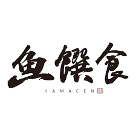
優化官網體驗，以禮盒節慶行銷提高客單，搭配 Meta 精準投放與 KOL 開箱。
強化獸醫師推薦與知識型內容，讓專業品牌在消費型通路建立信任與溫度。
以成分透明化敘事、短影音實測與訂閱機制，提升新客獲取與品牌搜尋。
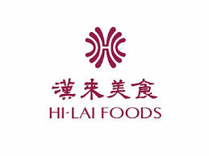
整合集團聲量並為官網帶來流量，旺季提前佈局廣告，強化節慶禮盒銷售。
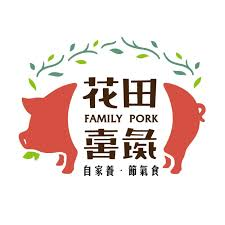
以短影音建立生鮮肉品信任感，搭配影音素材投放放大品牌識別。
企業改造轉型，以 IP 授權優勢談判版位資源，搭配直播操作放大業績。
建立消費者使用場景，透過通路擴展接觸不同層面的潛在消費者。
規劃官網與通路差異化經營，透過獨家組合與會員制提升回購並保護毛利。
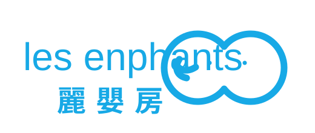
以公益活動與新聞稿提升品牌價值與消費者信任感。
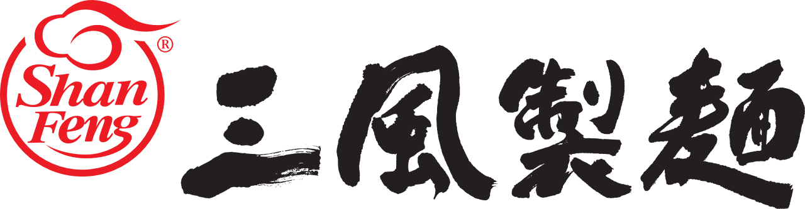
新品上市期間結合新聞稿與網紅開箱，提升品牌能見度與話題擴散。
透過網紅體驗與分享，降低新醫美服務的認知門檻並觸及目標客群。
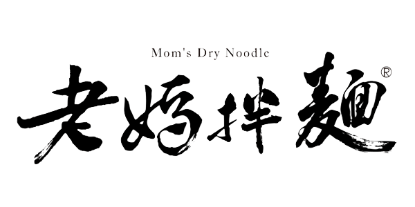
佈局海外網紅曝光，協助品牌在海外市場建立能見度。
制定社群全渠道營運 SOP，協助複雜組織建立穩定內容與渠道管理。
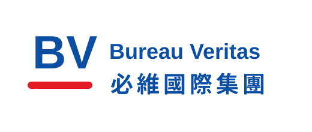
規劃展場互動活動與新聞發布，提升智慧能源與淨零永續展期間品牌聲量。
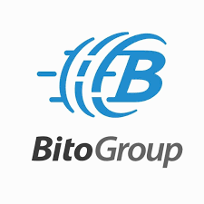
策劃大型合作發布記者會，讓全新服務升級獲得密集媒體曝光。
規劃廣告投放策略與投放數據分析，協助新產品獲取高品質用戶。
以投放策略與數據分析提升產品購買率，讓流量投入連回商業轉換。
規劃官網、SEO 與廣告策略，協助金融房產品牌建立可被搜尋的品牌聲量。
建立熱門保健品資訊站，透過專業寫手與 AI 工具產出優質內容增加有效流量。
以 WordPress 建置官網，讓品牌能運用後續行銷策略增加流量與知名度。
從無官網狀態建立品牌數位入口，支援後續流量導入與賽事資訊整合。
重建品牌官網，提升形象呈現與後續線上行銷承接能力。
以街訪互動格式創造旅遊內容擴散，帶動大量分享與品牌記憶點。
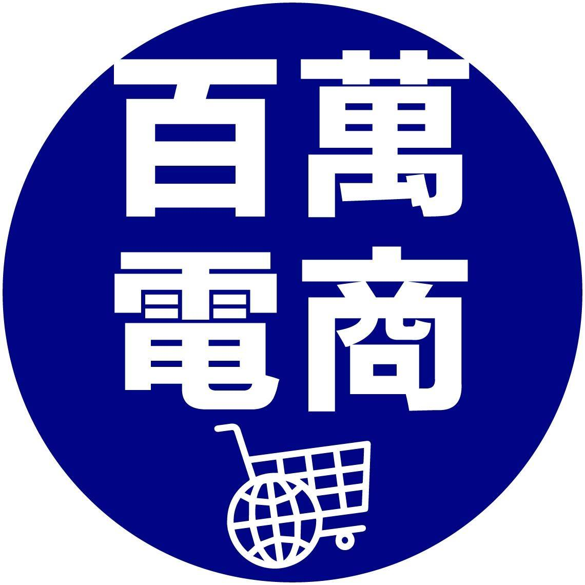
以知識型 Hooks 與 Podcast 剪輯創造爆款內容，帶動課程品牌聲量。
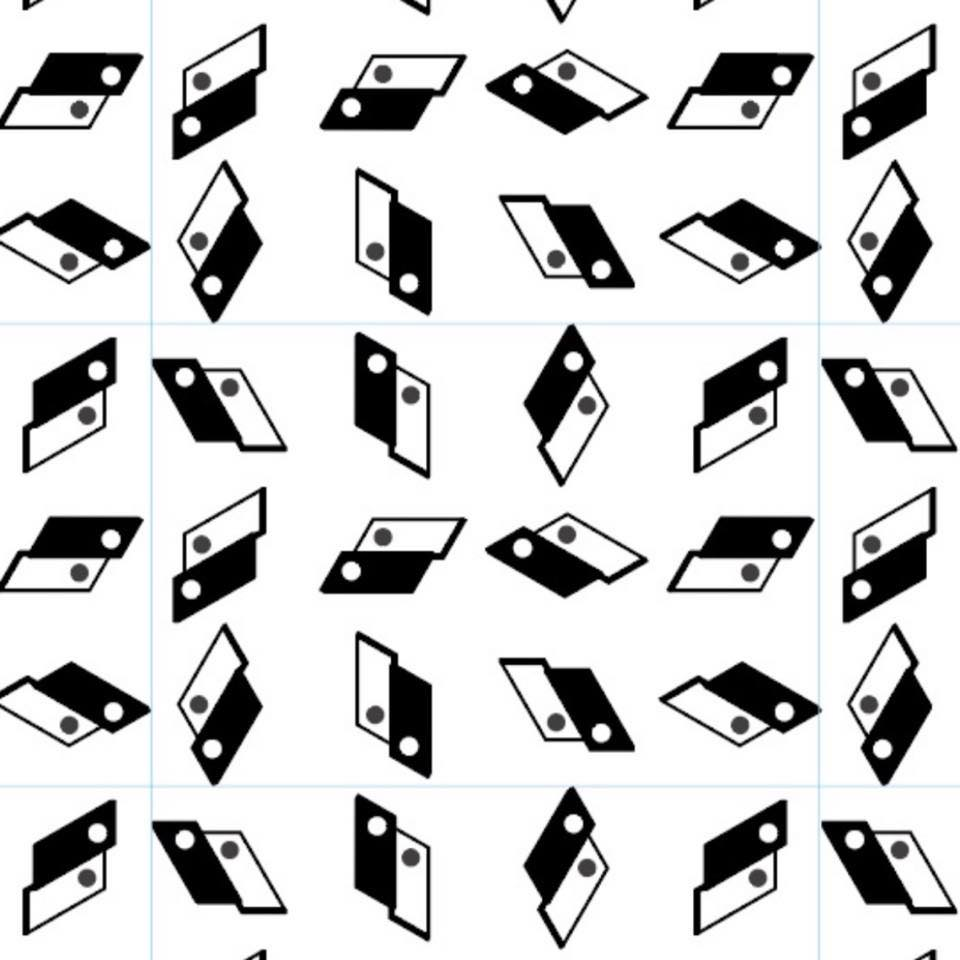
透過情緒共鳴切角與情境植入，讓洗護產品更自然地進入消費者日常。
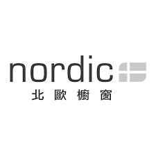
以高質感產品敘事觸及高端消費者，強化設計家具的品牌價值。
以實測型內容呈現清潔用品效果，讓產品賣點能快速被理解與分享。
LET'S TALK GROWTH
先不用急著選服務。BVG 會從你的商業目標、通路現況、內容資產與預算效率開始診斷，協助你判斷下一步最該優先解決的是什麼。
CONSULTING PROCESS
我們會先從企業現況與商業目標開始，而不是直接推薦某一項服務。透過一次聚焦對話，協助你釐清目前最值得優先投入的成長方向。
了解目前營收結構、通路組合、品牌階段與想達成的成長目標。
從流量、轉換、回購、聲量、內容資產與營運效率中判斷優先問題。
依照商業目標安排電商運營、公關、媒體、影音等部門的協作方式。
CONTACT
每一次合作都源於深度商業診斷。告訴我們你的品牌現況、營收結構、通路挑戰與成長目標，BVG 團隊會協助你找到下一個可執行的突破點。
本公司因案量較多，恕不參與任何提案比稿。